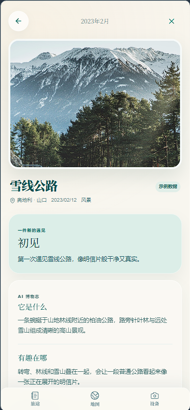
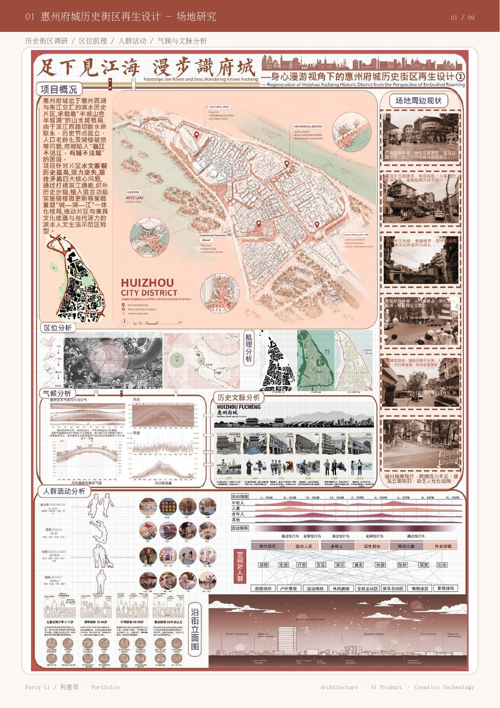

Luma Bar 灵光条
为 macOS 设计的常驻 AI 桌面入口。围绕频繁切窗与上下文中断，构建低摩擦输入、克制反馈与失败恢复体验。
- 产品设计 / 核心成员
- AdventureX 亚马逊云科技赛道二等奖
AVAILABLE FOR OPPORTUNITIES · SHENZHEN
我将建筑训练中的系统思维、空间叙事与视觉表达迁移到 AI 产品，连接问题定义、交互设计与可运行 Demo。
查看精选项目

PROFILE / 个人经历
我是利惠琴（Alina），建筑学背景，辅修涉外法治。擅长从复杂信息与真实场景中找到结构，把模糊的问题转化为清晰的产品路径、交互原型和视觉系统。
我关注 AI 产品里“用户如何理解结果、如何保持掌控、如何在不确定中继续行动”。从桌面 Agent、旅行记录到微学习，我希望设计的不只是界面，而是一套让智能能力自然进入日常的表达方式。
02 / SELECTED WORK
在产品策略、交互体验与视觉表达之间建立一致性。
为 macOS 设计的常驻 AI 桌面入口。围绕频繁切窗与上下文中断，构建低摩擦输入、克制反馈与失败恢复体验。
把旅行中的一次“遇见”，沉淀成可以再次抵达的记忆。以地图、记录与 AI 博物志串联采集、理解、确认和回看。


让内容兴趣成为返回学习的入口，用信息流学习卡、语境化单词与低压力反馈帮助用户重新进入学习。

以场地、人群与历史脉络为依据，将复杂研究组织成可读的视觉叙事，并转化为空间更新策略。
03 / CAPABILITIES
不把设计停留在好看，而是让它帮助团队对齐、验证并交付。
从用户场景、技术边界与竞品中提炼关键矛盾，建立信息架构、核心流程和 MVP 优先级。
关注生成过程、置信度、异常提示与人工纠错，让用户知道发生了什么，以及下一步可以做什么。
用版式、动效、色彩与组件语言形成一致体验，让品牌表达与产品逻辑共享同一套秩序。
能与工程、设备接入和设计成员协同，将方案拆成任务、验收标准与可运行 Demo，及时处理边界问题。
04 / CONTACT
欢迎联系我聊 AI 产品、视觉设计、创意技术，
或任何需要把复杂问题讲清楚的项目。